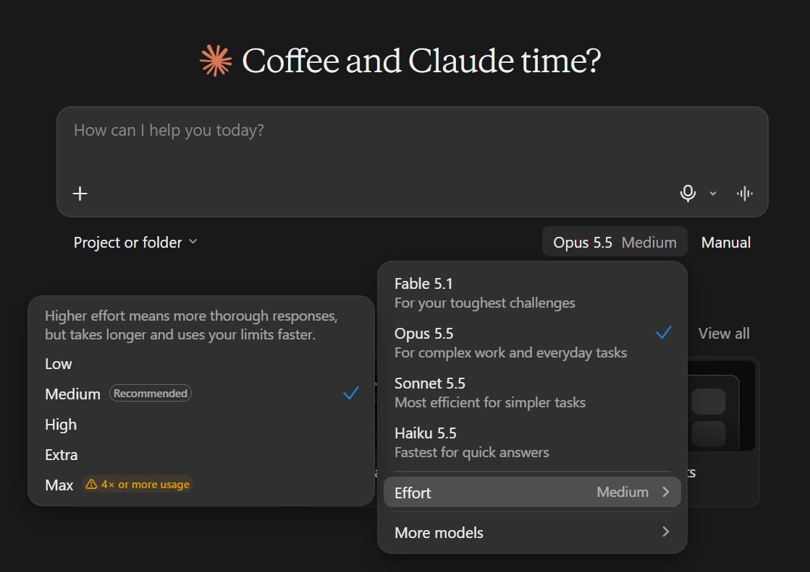

Ensimmäinen keskustelu
Kirjautuminen
- Avaa selaimessa claude.ai.
- Kirjaudu Google-tilillä tai sähköpostiosoitteella. Sähköpostilla kirjautuessa saat kirjautumislinkin tai koodin postiisi.
- Ensimmäisellä kerralla Claude kysyy nimeäsi ja muutaman asetuksen. Ilmainen tili (Free) riittää koko istuntoon 1.
- Avaa heti Settings > Privacy ja tarkista koulutusasetus (moduuli 0).
Ensimmäinen keskustelu
Kirjoita viesti alareunan kenttään ja paina Enter. Rivinvaihto viestin sisällä tulee Shift+Enterillä.
Hyvä ensimmäinen kokeilu on jotain, minkä vastauksen tiedät itse. Silloin näet, miten Claude vastaa ja missä se on varma tai epävarma. Esimerkiksi:
Selitä lyhyesti, mitä tämä PowerShell-komento tekee, ja kerro, onko siinä riskejä:
Get-ChildItem -Path . -Recurse -Filter *.log | Where-Object LastWriteTime -lt (Get-Date).AddDays(-30) | Remove-ItemVoit jatkaa samassa keskustelussa: "Muuta se niin, että se vain listaa tiedostot eikä poista mitään." Claude muistaa saman keskustelun aiemmat viestit.
Vastauksen alla on painikkeet kopiointiin, uudelleen generointiin ja palautteeseen. Vasemman reunan historiasta löydät vanhat keskustelut.
Mallin valinta
Claudessa on useita malleja. Malli valitaan viestikentän vieressä olevasta valikosta. Nimet ja versiot muuttuvat, mutta perusajatus pysyy:
| Malli | Milloin | Tilaus |
|---|---|---|
| Haiku | Nopeat ja yksinkertaiset kysymykset, lyhyet tekstit | Free |
| Sonnet | Useimmat työt: skriptit, lokit, ohjeet. Hyvä oletus. | Free |
| Opus | Vaikeat ongelmat, pitkä päättely, iso koodi | Pro tai ylempi |
| Fable | Vaativimmat tehtävät | Max ja Ultra; Prossa lisämaksusta |
Raskaampi malli kuluttaa käyttörajaa nopeammin. Aloita Sonnetilla ja vaihda vain, jos vastaus ei riitä. Mallien hintaerot ja käyttörajan toiminnan näet moduulin 0 käyttörajat-osiosta.
Laajennettu ajattelu
Laajennetussa ajattelussa (Thinking) Claude käyttää enemmän aikaa ongelman pilkkomiseen ennen vastaamista. Vastauksen yläpuolelle tulee avattava Thinking-osio, josta näet tiivistelmän sen päättelystä.
- Asetus löytyy mallivalikosta kohdasta Effort. Uusimmissa malleissa ajattelu on aina päällä, ja sen määrää säädetään effort-tasolla.
- Käytä enemmän ajattelua, kun ongelma on monivaiheinen: vianetsintä usean lokin perusteella, skriptin logiikka, vertailu.
- Kevyt taso riittää lyhyisiin kysymyksiin. Enemmän ajattelua on hitaampaa ja kuluttaa enemmän rajaa.
Effort-tasot järjestyksessä ja niiden vaikutus käyttörajaan: moduuli 0, käyttörajat.

Pitkä keskustelu kuluttaa rajaa
Claude ei muista keskustelua samalla tavalla kuin ihminen. Jokaisella uudella viestillä se käsittelee koko siihenastisen keskustelun uudelleen, liitteet mukaan lukien. Siksi:
- Kymmenes viesti pitkässä keskustelussa maksaa käyttörajasta paljon enemmän kuin ensimmäinen.
- Kun keskustelu kasvaa hyvin pitkäksi, Claude tiivistää vanhoja viestejä automaattisesti. Se kuluttaa rajaa lisää, ja yksityiskohtia voi kadota.
- Vanha, aiheeseen kuulumaton sisältö voi myös sekoittaa vastauksia.
Aloita uusi keskustelu, kun
- aihe vaihtuu
- keskustelu on venynyt pitkäksi ja Claude alkaa toistaa itseään tai unohtaa alun ohjeita
- olet saanut ratkaisun ja haluat jatkaa seuraavaan asiaan
Vinkki: pyydä ennen uutta keskustelua "Tiivistä tämän keskustelun tulos ja avoimet asiat muutamaan kohtaan" ja liitä tiivistelmä uuden keskustelun alkuun.
Harjoitukset
1. Selitä virheilmoitus
Kysy Claudelta, mitä tämä virhe tarkoittaa ja miten sen voi korjata. Pyydä vastaus vaiheittain, turvallisin vaihtoehto ensin.
The trust relationship between this workstation and the primary domain failed.Näytä esimerkkivastaus
Claude selittää, että työaseman konetilin salasana ei enää täsmää toimialueen kanssa (esimerkiksi palautettu vanha snapshot tai kone ollut pitkään pois verkosta). Turvallisin korjaus on yleensä kirjautua paikallisella ylläpitäjätunnuksella ja ajaa:
Test-ComputerSecureChannel -Repair -Credential (Get-Credential)Vaihtoehtona on irrottaa kone toimialueesta ja liittää uudelleen. Tarkista itse Get-Help Test-ComputerSecureChannel-komennolla, että parametrit ovat oikein.
2. Sama kysymys kahdella mallilla
Pyydä Haikulta ja Sonnetilta erillisissä keskusteluissa sama asia: "Kirjoita PowerShell-funktio, joka tarkistaa, vastaako lista palvelimia pingiin ja porttiin 443, ja tulostaa taulukon." Vertaa vastauksia: kumpi on parempi, ja oliko ero sen arvoinen?
Näytä esimerkkivastaus
Kummankin pitäisi käyttää Test-Connection- ja Test-NetConnection -Port 443 -cmdlettejä tai vastaavaa. Sonnet lisää todennäköisemmin parametrien tarkistuksen, aikakatkaisun ja siistimmän tulostuksen. Yksinkertaiseen tehtävään Haiku riittää usein, ja se säästää rajaa.
3. Tiivistä ja aloita alusta
Jatka harjoituksen 1 keskustelua parilla jatkokysymyksellä. Pyydä sitten tiivistelmä tuloksesta ja avoimista asioista. Aloita uusi keskustelu tiivistelmällä ja kysy: "Kirjoita tästä lyhyt ohje helpdeskille."
Näytä esimerkkivastaus
Tiivistelmässä on ongelman syy, korjauskomento ja varoitus esimerkiksi paikallisen ylläpitäjätunnuksen tarpeesta. Uudessa keskustelussa Claude kirjoittaa ohjeen pelkän tiivistelmän perusteella. Huomaat, ettei koko vanhaa keskustelua tarvittu.
Lisä: hyödyllisiä toimintoja
- Haku keskusteluista: vasemman reunan hausta löydät vanhat keskustelut.
- Incognito-keskustelu: ei jää historiaan eikä sitä käytetä koulutukseen.
- Viestin muokkaus: voit muokata aiempaa viestiäsi ja saada uuden vastauksen. Se on usein parempi kuin uusi korjausviesti.
- Käyttö: katso Settings > Usage harjoitusten jälkeen, paljonko rajasta kului.